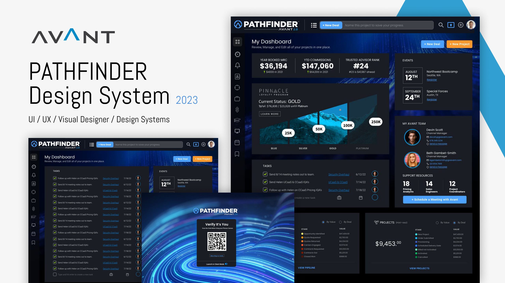
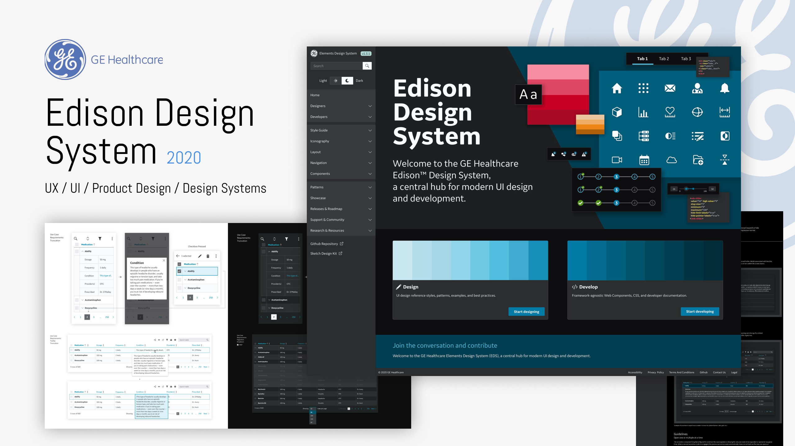
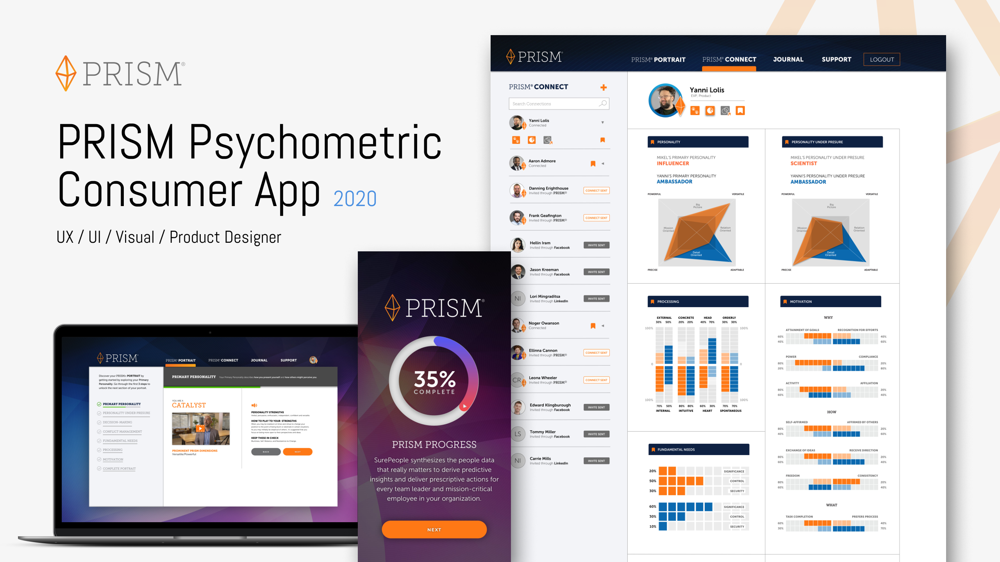
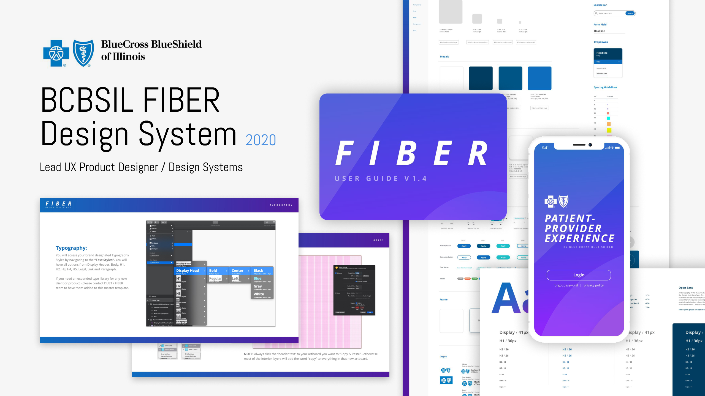
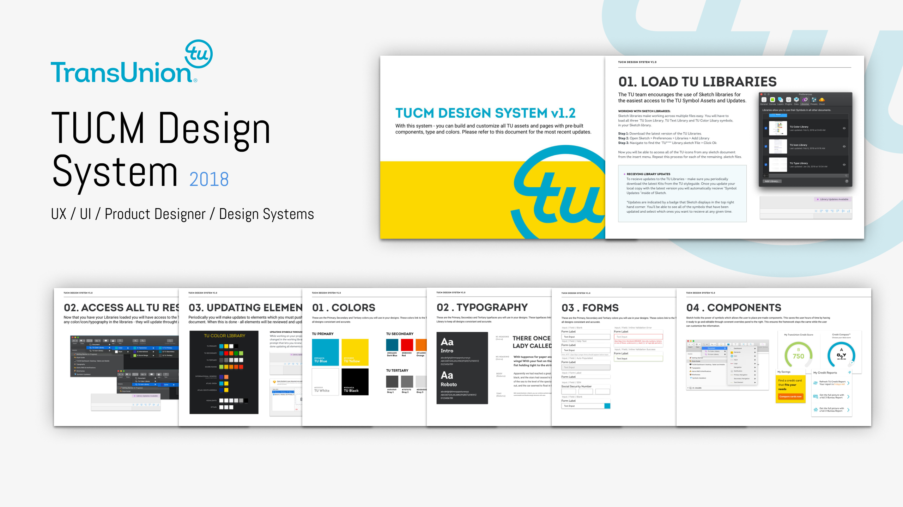
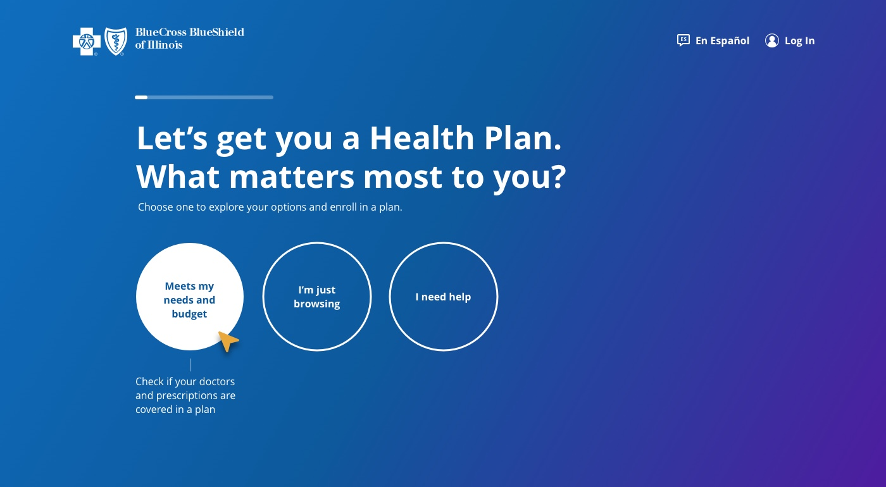
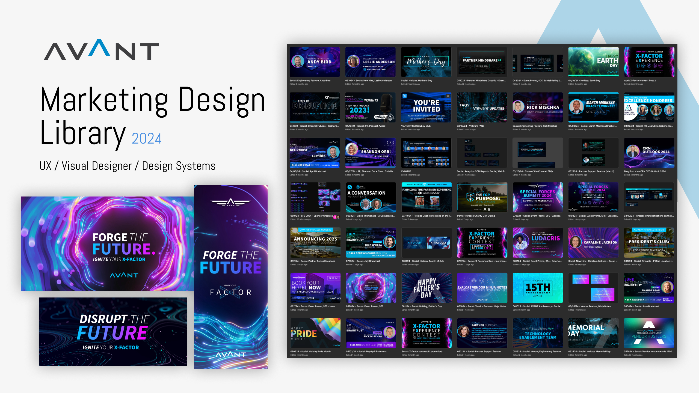
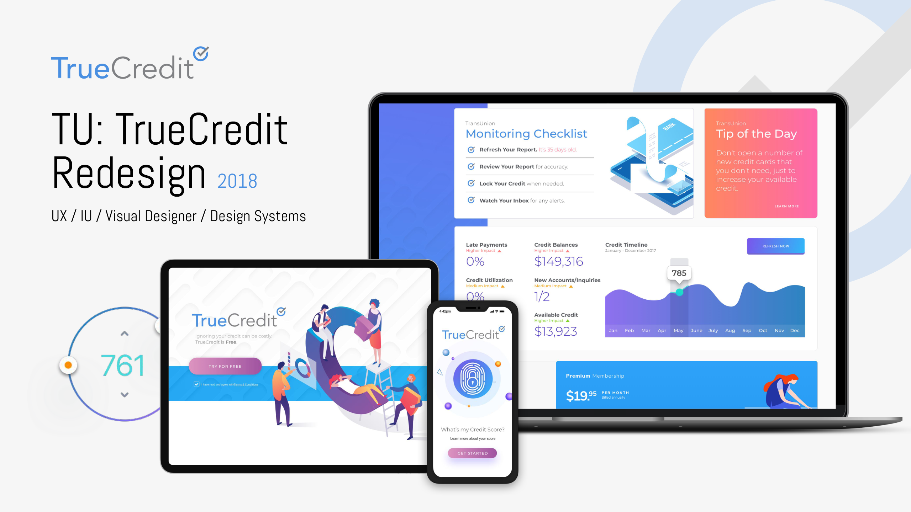

Mikel Rosenthal
01 / Signal
Design systems. Product experience. Brand architecture. Sound. Motion. Space. The work shifts form, but the practice is always the same: find the pattern, understand the human need behind it, and build something that lasts. I work selectively — with clients whose products make the world a better place.
02 / Systems
Avant / Amount · Fintech · May 2021 – Aug 2024
A dual-track system built to serve both product and marketing simultaneously — token architecture that let three teams and two brand contexts move without fragmenting.

Built Pathfinder from scratch as Principal Designer at Avant — starting with design tokens and extending through every surface the company touched: web app, mobile, marketing site, email, and partner-branded white-label products. The dual-track challenge was real: product designers needed tight, functional components with predictable behavior; marketing needed flexible, expressive layouts. Most systems pick one. Pathfinder was architected to serve both through structured token hierarchy.
GE Healthcare · Enterprise · Jan 2020 – Feb 2021
Healthcare's global design language. 40+ clinical products. Zero tolerance for ambiguity — because the people using these interfaces make life-critical decisions.

At GE Healthcare, the challenge wasn't building components — it was building trust. Clinical users have zero tolerance for ambiguity. Every pattern contributed had to be rigorously documented, accessibility-tested, and validated before touching production. Working closely with product designers and engineering teams to ensure the system remained a shared language — not just a Figma library. Won the 2020 Red Dot Award, Fast Company Innovation by Design, and dmi:DVA Award.
SurePeople · HR Tech · Jun 2020 – Sep 2020
Psychographic data made approachable. Dense personality intelligence rendered legible for a non-technical HR audience without losing any of its depth.

SurePeople was at an inflection point — the product had grown fast but the design hadn't kept up. Led product design and design system work simultaneously, building a consistent visual language while shipping against live deadlines. The PRISM Connect feature surfaces personality compatibility data between colleagues. The design challenge was making dense psychographic data feel approachable without dumbing it down.
Blue Cross Blue Shield · Healthcare · May 2018 – Dec 2019
The first unified design language across a fragmented insurance ecosystem — bringing consistency to a platform serving millions without disrupting the teams already shipping.

FIBER — Foundational Interface Building Elements Reference. Each product team had developed its own patterns, its own component vocabulary, its own interpretation of the brand. FIBER's job was to end that fragmentation without disrupting teams already shipping. Contributed to component library architecture and documentation standards, making FIBER something designers actually wanted to use — a genuine accelerant, not a mandate.
TransUnion · Enterprise · May 2018 – Jun 2019
Credit infrastructure. Designing trust under financial stress — for users who arrive anxious, sometimes in crisis, needing to act with complete confidence.

TransUnion handles financial data for hundreds of millions of people. The design challenge isn't just visual — it's epistemic. Users arrive anxious, often confused, sometimes in crisis. Every screen has to earn their trust before asking them to act on it. Work spanned the core credit manager product, consumer portal, and Credit Freeze — a high-stakes flow where users need to lock their credit report in minutes with complete confidence.
03 / Practice

BCBS Illinois · Healthcare
Enterprise UX across health plan enrollment, member portal, and digital benefits experience for millions of Illinois members.

Avant · Fintech
A systematic approach to marketing — template architecture and design library unifying Avant's full acquisition funnel across every surface.

TrueCredit · Consumer Finance
Product design for a consumer credit monitoring platform — translating complex financial data into clarity, action, and trust.
04 / Lab
Creativity is not separate
from systems work.
It fuels it.
05 / Arc
Early
Video production, motion, music, animation — I came to design through the moving image. Learning to compose a frame, cut to rhythm, shape an emotional arc. The tools changed. The instinct never did.
Middle
Enterprise design gave me scale — healthcare systems, financial platforms, insurance infrastructure serving millions. It also gave me chronic pain, and eventually, stillness. The two weren't unrelated.
Turning
Swimming. Tai chi. The koi pond. Learning to observe my own nervous system with the same precision I bring to interface design. Stillness isn't passivity — it's a very high-resolution form of attention.
Now
I work from a mid-century home I've spent years reshaping to match my nervous system. I take on work that matters, with clients whose products make something better. PBK Studio LLC — est. May 2026.
Observations